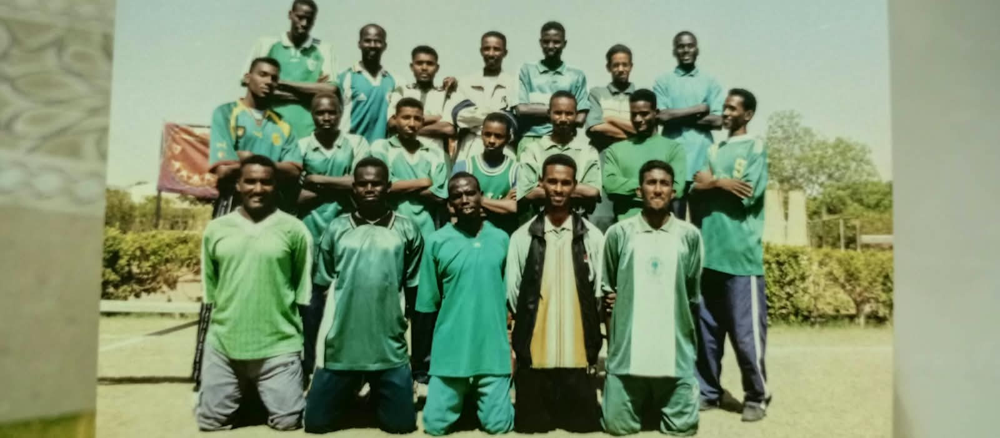
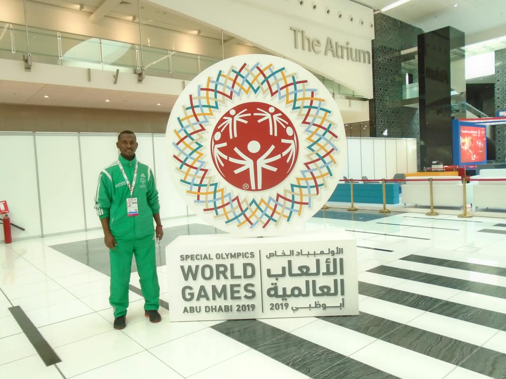
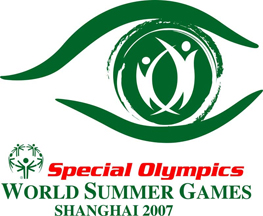
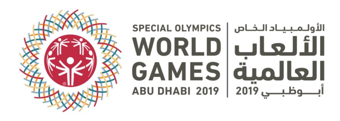
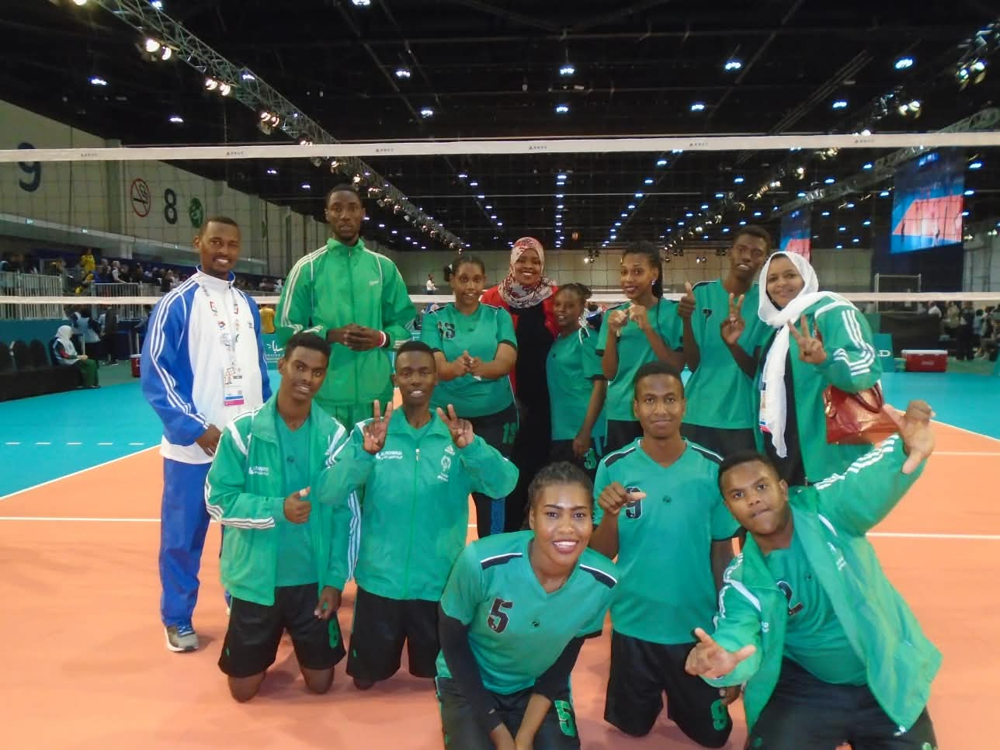

٢٠٠٣2003
جامعة السودانSudan University
بكالوريوس التربية البدنية، وبداية الطريق مع فرق الجامعة. Bachelor's degree in Physical Education, and the start of the road with the university teams.


أبوبكر السر خلف اللهAbubakr Al-Sir Khalaf-allah مدرّب رياضي ومعلّم تربية بدنية لأصحاب الهمم والطلاب. Sports coach and PE teacher for people of determination and students.
أكثر من خمسة عشر عاماً في الملاعب والصالات والمدارس. أعمل مع أصحاب الهمم ومع طلاب المدارس، وأبدأ دائماً من حيث يقف الشخص، ثم نتقدّم معاً بالسرعة التي تناسبه. More than fifteen years on tracks, courts and in schools. I work with people of determination and with school students. I always start where the person is, then we move forward together at the pace that suits them.
أعطي كل شخص الوقت الذي يحتاجه.I give every person the time they need.
أحب هذا العمل، ويظهر ذلك في كل حصة.I love this work, and it shows in every session.
أركّز على ما يستطيع الشخص فعله، لا على ما لا يستطيعه.I focus on what a person can do, not on what they can't.
ما أراه في كل موسم: الرياضي الذي يصل إلى خط النهاية يخرج من الملعب شخصاً أكثر ثقة وهدوءاً. What I see every season: an athlete who reaches the finish line leaves the field more confident and more settled.
كل إنجاز صغير، كأول قفزة أو أول لفّة كاملة، يبني إيماناً بأن «أنا أستطيع». Every small win, a first jump or a first full lap, builds the belief that "I can".
الفريق يعطي مكاناً ودوراً وأصدقاء، وهذا مهم خاصة لمن يشعر بالعزلة. A team gives a place, a role and friends. That matters most for anyone who feels alone.
الحركة المنتظمة تخفّف التوتر والقلق، وتحسّن النوم والتركيز. Regular movement eases stress and anxiety, and helps sleep and focus.
الالتزام بالتمرين والتعليمات ينتقل إلى الحياة اليومية: في البيت والمدرسة والعمل. Keeping to a routine and following instructions carries over into daily life: at home, at school and at work.
بكالوريوس التربية البدنية، وبداية الطريق مع فرق الجامعة. Bachelor's degree in Physical Education, and the start of the road with the university teams.


المدرب الرئيسي لألعاب القوى في بعثة السودان. نال أحد الرياضيين الذين درّبهم الميدالية الفضية في الجري. Head coach for athletics in Sudan's team. One of the athletes he trained won a silver medal in running.
حصص التربية البدنية وفق منهج كامبريدج (CIE) لفصول متنوعة القدرات من الروضة حتى الصف الثاني عشر. تنظيم الأيام الرياضية ومسابقات البيوت والسباحة، مع إشراك كل الطلاب. PE lessons on the Cambridge (CIE) curriculum for mixed-ability classes from KG to Grade 12. Organised sports days, inter-house competitions and swimming galas, with every student included.
برامج تدريب فردية لأهداف مختلفة، وتصحيح الأداء لتقدّم آمن بلا إصابات. Individual training programmes for different goals, and form correction for safe progress without injury.

مدرب رئيسي ضمن بعثة السودان. أقامت البعثة في الشارقة ضمن برنامج المدن المستضيفة، وعاد السودان بـ٤٠ ميدالية. Principal coach with Sudan's team. The team stayed in Sharjah as part of the Host Town programme, and Sudan came home with 40 medals.

سودان ناو: ٤٠ ميداليةSudanow: 40 medals الاتحاد: البعثة في الشارقةAletihad: the team in Sharjahمتاح لتدريب الأفراد، والعمل مع المدارس والمراكز والأندية. Available to train individuals, and to work with schools, centres and clubs.
جامعة السودانSudan University
الاتحاد الدولي للكرة الطائرة (FIVB)International Volleyball Federation (FIVB)
برنامج Data VolleyData Volley software
إدارة الفرق والفعاليات الرياضيةManaging teams and sports events